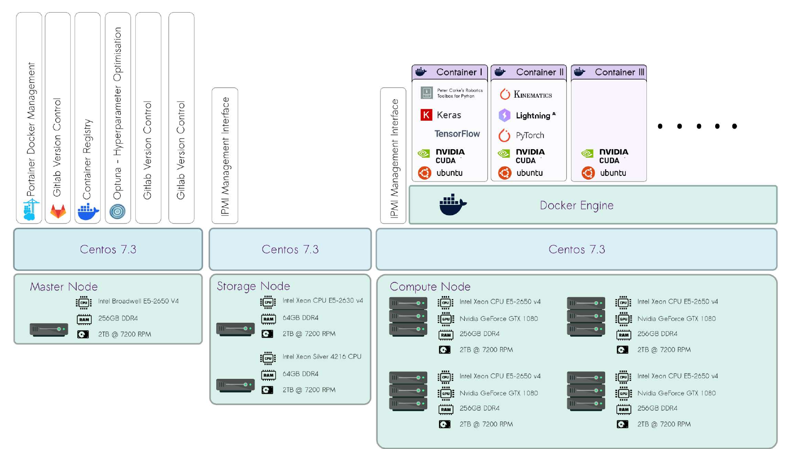
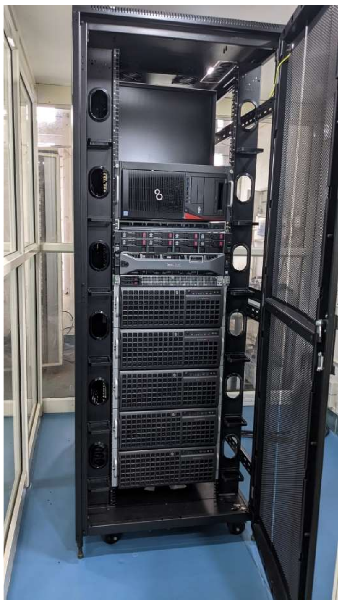

ML training platform
A GPU training platform for generative trajectory models: data from simulation, containerised training, automated hyperparameter search, and deployment to a robot.
From simulation to deployment
Switch between the data and training view and the deployment view. Hover a block to trace its links, click it for details.
The layered stack
The platform is built in layers. Each layer runs on the one below it, so the same container images can move between nodes without changes.
This is the stack I used for the research work in my PhD thesis: simulation data generation, model training and hyperparameter search.

Cluster capacity
Compute comes from GPU and CPU nodes on a private network, with a master node for management and a storage node for datasets.

How the platform is run
One container per stack
TensorFlow and PyTorch run in separate Docker containers with pinned CUDA, so each project keeps its own dependencies.
Automated tuning
Optuna runs hyperparameter trials across the GPU nodes and keeps the best configuration for each model.
Code and images
GitLab manages code and versions. Built images go to a container registry before they reach the cluster.
Managed nodes
Portainer manages the Docker containers, and nodes run CentOS 7.3 with an IPMI management interface.
The platform and its use in the research are described in thesis chapter 7 (PDF).